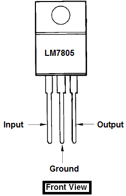
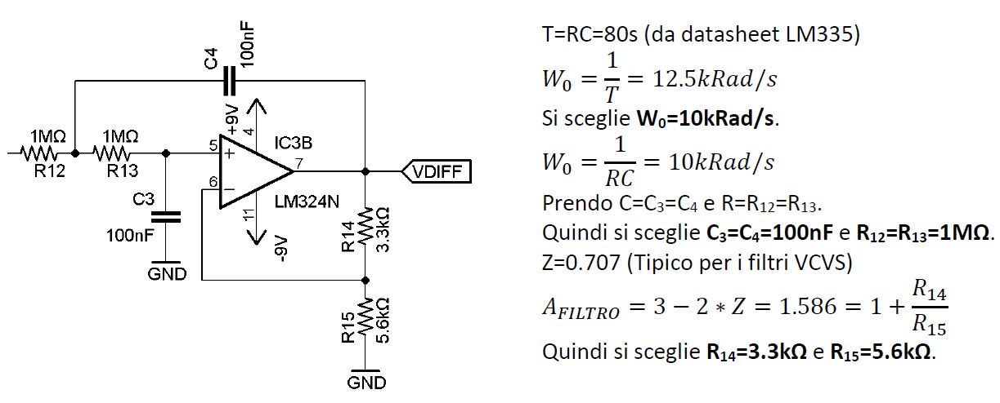

{kind=link}

Di seguito si illustra il progetto di un termometro digitale. Il progetto è molto utile per capire il funzionamento delle dinamiche interne di un circuito di acquisizione dati gestito da un microcontrollore, il che diventa utilissimo per moltissime applicazioni dove è necessario acquisire valori analogici da sensori e manipolarne il segnale al fine di ottenere una misura più precisa. Questo sistema integra al suo interno il microcontrollore ATMega328p. Pur essendo un progetto artigianale e scolastico, il termometro non è molto ingombrante (6 cm di larghezza x 12.7cm di lunghezza).
Lo scopo del progetto è di realizzare un circuito in grado di acquisire la temperatura dell’ambiente tramite un sensore di mostrarla su in display LCD. Questo progetto non è quindi solo un puro e semplice esercizio, ma si tratta di un progetto con un’applicazione pratica e funzionale.
Il termometro ha le seguenti specifiche:L’alimentazione viene fornita da due batterie da 9V, necessaria per l’alimentazione degli operazionali.
Il regolatore di tensione LM7805 prende in ingresso la tensione di 9V della batteria e in uscita fornisce 5V necessari all’alimentazione dell’ATMega328p.

Questo integrato è un trasduttore di temperatura cioè in uscita fornisce una tensione proporzionale alla temperatura percepita. Questo componente è equivalente ad un diodo zener e il comportamento è regolato secondo la seguente formula:
Dove con Vo si intende la tensione in uscita dall'LM335 e K la temperatura espressa in gradi Kelvin. Può misurare temperature che hanno un range compreso tra -223 °K (-50°C) e 423°K (150°C). Il trasduttore presenta 3 piedini: il potenziale negativo, il potenziale positivo e l'adjustment (regolazione). Quest'ultimo, infatti, serve per la taratura della Vo. Esso va collegato ad un trimmer utilizzato per calibrare la temperatura manualmente. In questo progetto si presume che il sensore fornisce una tensione compresa tra 2.7315V(0°C) e 3.4315V(70°C).

Il circuito di condizionamento prende in ingresso il segnale fornito dal sensore di temperatura LM335, lo manipola adattandolo al range dell’ADC dell’ATMega328(0-5V). È formato da un amplificatore da strumentazione, un filtro LPF e un riferimento di tensione di 2.7315V.
E’ un integrato che fornisce un uscita stabile di 5V, in questo caso ridotti a 2.7315V mediante un partitore di tensione regolato da un trimmer.
Non è stato utilizzato un amplificatore da strumentazione integrato, ma ne è stata ricreata la struttura con 3 operazionali LM324N.

L’uscita è regolata dalla seguente espressione:
Il filtro passa basso del secondo ordine posto in uscita dell’amplificatore da strumentazione elimina i disturbi in bassa frequenza.

L’ATMega328p è il microcontrollore utilizzato dall’Arduino UNO, questo permette di usare codice Arduino in un progetto senza avere una intera e ingombrante scheda. Per utilizzare l’ATMega328p sono necessari un oscillatore al quarzo da 16Mhz, una tensione di alimentazione di 5V e una connessione seriale. L’ATMega328p prende in ingresso il segnale proveniente dal circuito di condizionamento, e lo mostra sul display LCD.


Questo display LCD 16x2 possiede 2 righe da 16 colonne, ovvero ciascuna riga contiene 16 caratteri. Visualizza costantemente la stringa “Temperatura: “e il valore in °C della temperatura misurata. Possiede un trimmer per regolarne il contrasto.
Il pcb e gli schemi elettrici sono stati realizzati mediante l’utilizzo del software EAGLE. Nel top è presente il piano di massa, mentre nel bottom il piano di VCC.
#include <LiquidCrystal.h>
LiquidCrystal lcd(8, 9, 10, 11, 12, 13);
float temperatura=0;
void setup() {
lcd.begin(16, 2);
Serial.begin(9600);
}
void loop() {
float analogica=analogRead(0);
temperatura=(analogica*70)/1023;
Serial.print("Temperatura= ");
Serial.println(temperatura,4);
lcd.clear();
lcd.setCursor(0, 0);
lcd.print("Temperatura:");
lcd.setCursor(0, 1);
lcd.print(temperatura,1);
lcd.print(" C");
delay(2000);
}
Il progetto è stato concluso con successo, anche se non si era partiti nel modo migliore, visto la scarsità di componenti reperibili nel magazzino del laboratorio OEN2 dell’istituto. Per diminuire le dimensioni del PCB si potevano utilizzare componenti SMD, non presenti però nel magazzino della scuola, utilizzare un amplificatore da strumentazione integrato anziché ricrearne la struttura e sostituire i trimmer con dei resistori.